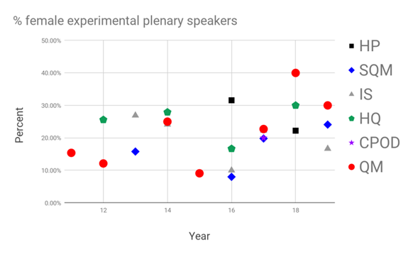

Analysis
of Conference Speaker Statistics in Relativistic Heavy Ion
Physics
This page presents highlights of an analysis of conference speaker
statistics in the field of Relativisitic Heavy Ion physics. It is
based on speakers listed on public websites from most major
conferences in this field between 2011 and 2019. The analysis
was performed by members of the RHIC/AGS
UEC and others. For more information please
contact the authors at rhic_conference_stats_analysis_team@gmail.com.
These pages were designed by the authors and the RHIC UEC Diversity
Working Group.
The study identified a number of issues outline in sections below,
which may point to the need for conference organizers to apply more
equitable methods of selecting speakers:
-Small numbers of
speakers give a disproportionately large number of talks
(click here)
-Gender
representation at major conferences often has problematic
fluctuations, with women frequently underrepresented among
speakers (click here)
Based on these results we recommend conference organizers in our
field use best practices
linked here for avoiding these sorts of problems, such using a
speaker candidate list that includes all members of the
community. We are happy to provide such a list upon request by
email to rhic_uec@gmail.com.
In many places in the analysis we make reference to general
demographics statistics such as the percentage of experimentalists
that are female. This page contains
information on these demographics estimations.
Disproportionately Large Numbers of Talks Given by Small Numbers
of Speakers
A small fraction of speakers are responsible for a disproportionate
number of talks. This is particularly dominant among female
theorists. Pie Chart:
About 40% of talks are given by people with 3 or more talks.
Problematic Fluctuations in Gender Representation In Conference
Speakers
The fields of physics in general and nuclear physics has
underrepresentation by women and minority much smaller than
demographic fractions. [citation] Most in the community
agree that steps should be taken to mitigate biases that contribute
to the causes of underrepresentation and encourage the
underepresented social identities to join and stay in the
field. Research shows [citation stereotype threat, etc.] and
experience of the RHIC Diversity Working group members
anecdotally confirms that observing more role models in the
field helps avoid negative feedback cycles that lead to further,
worse underrepresentation. Talks at conferences are high
profile situtations that conference organizers should
therefore take steps to avoid unneccessary low fluctuations below
the known fractions based on the demographic fractions of
minorities.
The results of Gender representation at major conferences has been
uneven, with women frequently underrepresented among speakers
Women are less likely to get “vision” talks. No woman has ever given
the QM summary.
-In the data anlaysis that follows we use as a reference the
following expectations for the percent of femaile
theorists, Theorists: 12.4% female Experimentalists:
20.3% female based on the demographics estimations referenced here.

|

|
-In the data anlaysis that follows we use as a reference the
following expectations for the percent of femaile
theorists, Theorists: 12.4% female Experimentalists:
20.3% female… this is based on XXX, YYY
This part can also reference Lab data?
Conclusions
Based on these results we recommend conference organizers in our
field use best
practices linked here for avoiding these sorts of problems,
such using a speaker candidate list that includes all members of the
community. We are happy to provide such a list upon request by
email to rhic_uec@gmail.com.